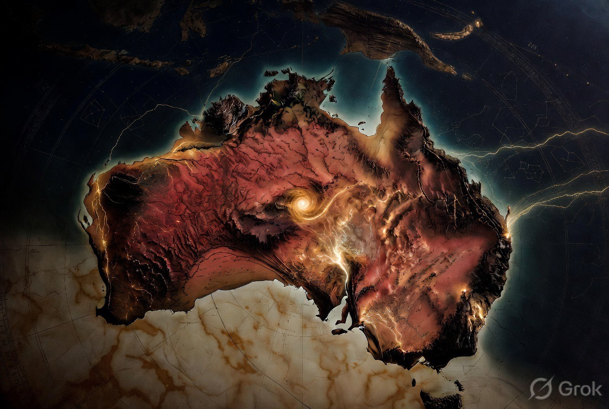

Multiple Sites, Kept Honest and Separate

The southern-node vision is not confined to one site. Real space infrastructure networks rarely are — different sites do different jobs, on different timelines, for different partners. This document maps the sites under consideration so each one is judged on its own status, rather than borrowing credibility from — or lending risk to — the others.
Each site has its own land, its own custodians, its own legal pathway. Consent, once given for one site, does not carry to another.
Sourced · Near-Term
Recovery, refurbishment, feedstock, and energy substrate. Deep-water port and heavy industry already exist; the question is orientation, not greenfield build. Covered in full in the Geographic Brief and pitched on the SpaceX Engagement page, including the Cultural Heritage & Consent section governing any site-specific work there.
This is the only site currently backed by outside public reporting (the May 2026 SpaceNews analysis) discussing Starship recovery and Pilbara infrastructure specifically.
East Arnhem Land, NT · ~1,580 km from Pilbara
A suborbital sounding-rocket facility (NASA flew three Black Brant IX missions from here in 2022; it was never built for orbital capability). Equatorial Launch Australia ceased operations in December 2024 after failing to secure a lease extension, despite the Gumatj Corporation — the Traditional Owner corporation for the land — reportedly working toward it since February 2024. The Northern Land Council, the statutory body required to issue leases over Aboriginal land, did not approve it or explain the delay. ELA has since relocated its plans to a Queensland site.
Any future interest here goes through the Gumatj Corporation and the Northern Land Council — the same process that a well-funded, already-invested company could not get through in over a year. This is not a blank or available site; it is a stalled one, on someone else's land, for reasons not fully public.
No land named
The idea of humanoid-robot ("Optimus"-class) assistance for land care, wildlife, and station work in partnership with Traditional Owners. Two separate reasons this stays speculative rather than scoped:
This entry exists to record the idea, not to advance it.
A site moves from this roadmap into an active proposal document only when it has: a named, sourced basis for the claim (public reporting, an existing asset, or a completed feasibility study — not intent alone); and, where the land is Aboriginal-owned or native-title land, a documented consent or engagement process specific to that site, not inherited from another.